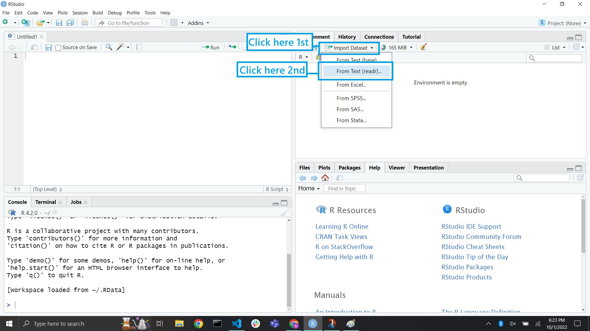

library(tidyverse)
dataset <- read_csv(file_path)
head(dataset)Method 1: Copy File Path Option
The readr package is the first package that we will learn about. This allows us to read in rectangular data like cvs files.
This is the typical way it goes when you have data located on your computer.
Copy the file path from your computer and paste it in the function. One downside to this is you have to manually replace each backslash \ with a forwardslash /
Here is an example:
library(tidyverse)
bob <- read_csv("C:/Users/Bethany/Downloads/US_Population_200_Years.csv")
head(bob)# A tibble: 6 × 7
Rank City Population Year PopDate Longitude Latitude
<dbl> <chr> <dbl> <dbl> <chr> <dbl> <dbl>
1 1 New York, NY 33131 1790 06/01/1790 -73.9 40.7
2 2 Philadelphia, PA 44096 1790 06/01/1790 -75.1 40.0
3 3 Boston, MA 18320 1790 06/01/1790 -71.1 42.3
4 4 Charleston, SC 16359 1790 06/01/1790 -80.0 32.8
5 5 Baltimore, MD 13503 1790 06/01/1790 -76.6 39.3
6 7 Salem, MA 7921 1790 06/01/1790 -70.9 42.5Method 2: “Import Dataset” Button Option
Another option is to use the “Import Dataset” button in the environment pane of RStudio.


The data will now be in your environment.
Method 3: Getting data from a URL
Often you get your data from online somewhere like GitHub or Kaggle. While there is the option to download the file, then read it from your computer locally, like we just did above, there’s also the option to read in data from a URL.
A benefit is that less memory is used on your computer. Another is that you can send your analysis with the data being read in from a URL, and others will be able to run the script without any data issues.
Below is an example.
library(tidyverse)
data1 <- read_csv("https://raw.githubusercontent.com/saundersg/Statistics-Notebook/master/Data/Rent.csv")
head(data1)Other Data File Formats
What if the dataset you have is not a csv? What if it’s an excel file or the often unused tsc?
Other options include:
read_excel()to read excel files like xls or xlsxread_tsv()to read tsv files (tab separated files)read_rds()to read RDS files (a data export option from SQLServer)
Exceptions to the Norm
For most cases this is the way to read in data. There are some examples of variations.
Sometimes the column headers are not the top row of the data. In this scenario, use the option skip = 1 if there is one extra row above the headers.
Sometimes there are not column name at all and we’ll have to give them to the dataset. How can we do this?
Writing Files
With readr, we can write data files.
write_csv(dataset_to_save, "file_name.csv")